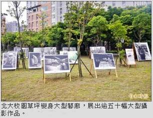

《看畫的小孩》如今89歲 本尊現身
《看畫的小孩》昨天限時一日在北大展出，該畫是李梅樹最擅長的人物畫之一，近日才完成修復得以展出，畫中身穿藍衣的小女孩，是李梅樹的二女兒李麗月，高齡八十九歲的她，特地坐輪椅來到會場，引起民眾一陣驚呼，頻頻拿起手機拍照，記錄難得的一刻，她也感嘆，「看到這幅畫重見天日，覺得特別感動，令我想起嚴肅的父親。」
李梅樹紀念館與國立台北大學合作，舉辦「梅好時光」展覽，李梅樹從未曝光的作品《看畫的小孩》首度公開展出，並邀請畫中人驚喜現身會場，相隔八十二年，畫裡的小女孩已成老太太，與作品相映成趣。

李梅樹曾在半世紀前，為一八九五年三位痛擊日軍的三峽勇士繪製肖像，當年的戰場即位於北大一帶，因此作品《抗日三傑》首度回到原址亮相，令展覽別具意義。
適逢三峽老街一百週年，此次也展出老街上的磚模，包括抗日象徵「藍地黃虎旗」與李梅樹描繪三峽的經典作品，對照日前發生的刨街風波，盼引起觀者省思。
展覽也集結游宏昌、彭春榮等七位藝術家，以「時光、人文、風土」為主題，一同在北大圖書館登場，走入展間可看到幾可亂真的陶瓷名牌包、一百隻糖霜兔娃娃、華麗精緻的餐桌食器等，作品媒材多元，吸引民眾爭相拍照。

北大校園變藝廊 逾50幅攝影作品特展
另外，北大校園草坪也變身大型藝廊，展出逾五十幅大型攝影作品，參展者包括台灣攝影先驅張才、成福國小攝影社等，觀者必須穿梭在草地與樹林中，欣賞三峽賽豬公慶典、煤礦黑金歲月等珍貴歷史畫面，可謂多重感官藝術體驗。展覽即日起至六月卅日止，詳情可至「李梅樹紀念館」臉書專頁查詢。